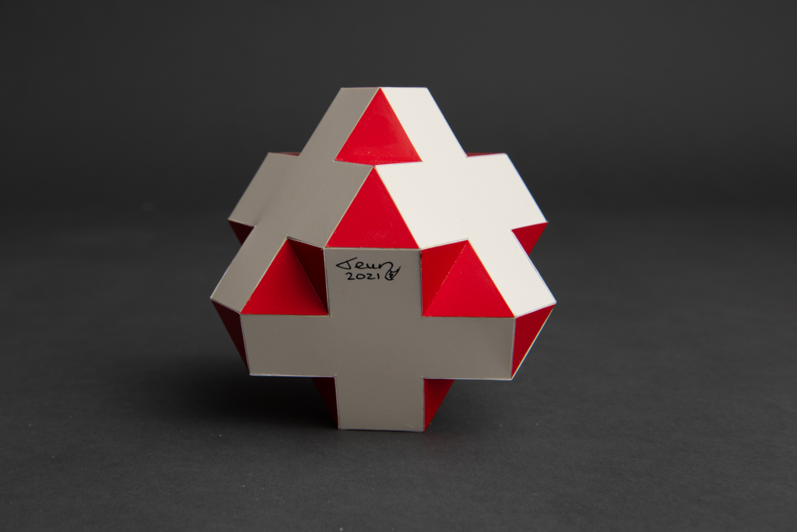

Swissohedron

This is the first crossohedron that I found. One that is also mentioned by Wenzel Jamnitzer in the 16th century. See more about this here.
Depending how you see interprete the crosses this polyhedron can be seen in two ways with two different topologies. If you think of the crosses as two rectangles then this polyhedron has two edge lengths with a ratio of 1:3 and it consists of 6 crosses, 8 equilateral triangles of length 1 and 8 equilateral triangles of length 3. If see the crosses as equilateral concave dodecagons on the other hand, then this polyhedron is equilateral and it consists of 6 crosses and 32 equilateral triangles. However you look at it, this polyhedron is isogonal (vertex-transitive).
This model was built in 2021 and the smallest edge length is 2.5 cm (1 inch). The colours were chosen to show the resemblence with a 3D Swiss flag. For that reason the name "Swissohedron" was coined. However the cross in the official Swiss flag doesn't consist of squares. There are rectangles on the sides with a ratio of 6:7. I polyhedron with that cross exists as well, you can choose it in the drop-down meu below the 3D model.
Copyright of picture by PhotoArt Studio Hörby
Links
Last Updated
2021-03-31